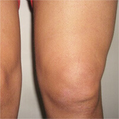
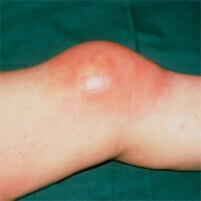
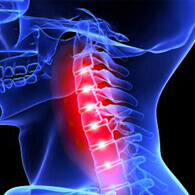
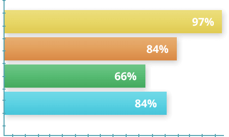

Traumatologo, chirurgo dell'unità di chirurgia articolare e artroscopia
IL GEL CONTRO LE MALATTIE ARTICOLARI
Eliminazione dei problemi alle articolazioni in 30 giorni!
- Ripristina le cartilagini e le articolazioni
- Attenua il dolore in 15 minuti
- Ferma il processo infiammatorio
- Libera dai gonfiori alle articolazioni
QUALI MALATTIE COMBATTE Ostelife?
Ostelife è un gel unico contro le malattie articolari, che non ha gli analoghi al mercato italiano.
La causa di questo è la formula con i principi attivi molto speciali. Ci sono anche tantissimi vitamine e microelementi (fosforo, potassio, nichelio, calcio, silicio, sodio, ecc.), nonché 18 amminoacidi (da 22 esistenti).
La terapia integrata con Ostelife ti aiuta di
sbarazzarsi dalle malattie come:

Artrite e artrosi

Sinovite
Osteocondrosi e osteoporosi

Borsite
Ostelife aiuta di eliminare il problema, non solo di mascherare i sintomi della malattia!
Ostelife allevia il dolore e l'infiammazione e ferma la distruzione dell'articolazione.
Conseguenze e rischi delle malattie articolari
che appariscono se curare i sintomi invece di malattia

Deformazione delle ossa
Dolore insopportabile

Paralisi
Disabilità
Quale malattia ti rovina la vita?
| Malattia | Sintomi | Conseguenze |
|---|---|---|
| Artrite e artrosi | Dolore in moto e a riposo. Difficoltà di movimento. A volta arrossamento cutaneo, aumento di temperatura. | Deformazione dell'articolazione. Distruzione del tessuto osseo. Immobilità completa. |
| Osteocondrosi e osteoporosi | Periodico intorpidimento degli arti. Dolore alla schiena e alla colonna vertebrale. Dolore nella zona di cuore e costole. | Peggioramento della fissazione di vertebre. Ernie. Disfunzioni vascolari. Disabilità. |
| Borsite | Gonfiore nell'area dell'articolazione danneggiata. Alterazione della mobilità articolare o completa immobilità dell'arto. Sensazioni dolorose. Arrossamento cutaneo con confini disuguali nell'area di gonfiore. | Infiammazione del tessuto osseo. Formazione di pus. Infezione del sangue. Completa immobilità dell'articolazione. |
| Sinovite | Impaccio di movimenti. Sensazioni fastidiose, gonfiore dell'area affetta. Ingrandimento e deformazione dell'articolazione danneggiata. Aumenta della temperatura locale e generale. | Distruzione dell'articolazione. Paralisi. Infezione del sangue. Capitano gli esiti letali. |
Attenzione! Cura la malattia, non solo i sintomi. EVITA LE CONSEGUENZE GRAVI!
Applica Ostelife entro 30 giorni e dimenticati di malattia per sempre!
Ordina
Cosa è Ostelife?
- Eliminazione completa della malattia
- Azione curativa sui tessuti danneggiati
- Attenuazione momentanea del dolore
- Azione diretta sul focolaio
- Rigenerazione dei tessuti danneggiati
- Profilassi delle malattie articolari e ossee
Senza la terapia adeguata le articolazioni affette causano le complicazioni gravissime nell'organismo intero. Per non soffrire delle conseguenze irrimediabili come paralisi parziale o completa, inizia a curarti il più presto possibile!
Gli studi indipendenti hanno dimostrato l'efficacia di Ostelife
Nel 2016 sono stati condotti gli studi clinici negli quali hanno partecipato 1700 volontari con le malattie articolari di diversa gravità. Secondo le regole, i pazienti usavano Ostelife entro un mese. Alla base di sperimento è stata creata la statistica seguente:

- Il 97% dei partecipanti hanno sentito il rapido alleviamento del dolore
- L'84% dei volontari si sono liberati dai problemi con le articolazioni in 1 ciclo
- Il 66% hanno cominciato a fare sport dopo il ciclo di trattamento
- L'84% hanno notato i miglioramenti di mobilità articolare
Consigli del chirurgo:
Di solito la gente va da me, quando la malattia è già grave ed è necessario un intervento. Il principale errore è la mancanza della terapia tempestiva.
È necessario scegliere un medicinale effettivo, invece di accontentarvi dei metodi casalinghi che non portano nessun effetto positivo. Ci sono molte creme che possono liberarvi dai problemi alle articolazioni in modo rapido, ma vi raccomando Ostelife, perché è l'unico prodotto certificato e clinicamente testato che ha l'effetto integrato.
Grazie all'aplicazione del gel, i principi attivi penetrano il più profondo possibile nei tessuti danneggiati e vi liberano dai problemi molto velocemente.
Ostelife è assolutamente naturale e può essere prescritto alle donne incinte e ai bambini.
Dott. Silvio Carpinelli
Sbarazzati del dolore e l'infiammazione, sii contento di muoverti, non permettere al dolore articolare di limitare la tua vita!
Comincia il trattamento oggi per tornare alla vita attiva domani!
inizia la cura
Alcune di 4 588 recensioni:
Mario Arienti
46 anni
logista
Per due anni mi faceva male il gomito, non avevo tempo di andare dal dottore. Usavo un po' la pomata dalla farmacia più vicina, per qualche ora attenuava il dolore. Poi mi è uscita la protuberanza, sembrava la borsite. Mi sono spaventato tantissimo! Mia moglie ha detto che è serio e devo iniziare a trattare la malattia. Mi ha comprato Ostelife. Tra qualche giorno il gonfiore è sparito, il dolore è cessato. Finalmente mi sento bene!
Sabrina Rutigliano
39 anni
imprenditrice
Il medico ha trovato il ciste sotto il mio ginocchio e ha detto che non può fare niente. Sono andata dal altro dottore che mi ha prescritto Ostelife per 2 settimane. Ho sentito l'attenuazione del dolore già dopo la prima applicazione, tra 7 giorni il dolore è sparito affatto. Tra 6 mesi mi hanno detto che il ciste è meravigliosamente risolto!
Diana Scatolini
54 anni
casalinga
Mi sono rotta la gamba e per qualche mesi stavo all'ospedale. Il medico ha detto che avrei potuto camminare, ma i dolori sarebbero stati costanti. Per dire la verità, non potevo sopportarlo, ogni passo è stato una sorta di tormento. Per ripristinare i tessuti ho cominciato ad applicare Ostelife. Il dolore è diventato meno forte, spero che tra un po' sparisca per sempre.
Giacomo Bricchio
27 anni
softwarista
Avevo mal di schiena, non prestavo molta attenzione a questi dolori, ma poi si sono rafforzati e non potevo nemmeno stare dritto. Ho cominciato la terapia con Ostelife. Ogni sera ungeva la schiena con questo gel. Tra una settimana potevo già condurre una vita normale!
Il GEL CONTRO LE MALATTIE ARTICOLARI
Liberazione dai problemi alle articolazioni in 30 giorni!
Godete di vita SENZA dolore e disagio
- Ripristina le cartilagini e le articolazioni
- Attenua il dolore in 15 minuti
- Ferma il processo infiammatorio
- Libera dai gonfiori alle articolazioni